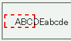

overflow: visible; が指定された要素内にボックス幅をはみ出すほど長い半角英数文字列が含まれていると、ボックス幅がその文字列を含むサイズに修正されてしまう。
<p style="width:3em; border:2px dashed red;">ABCDEabcde</p>
ABCDEabcde
p要素の幅を3文字分にしています。先頭に空白があるのは、外部スタイルシートで text-indent:1em; を指定しているためです。
Moz1.0.1での表示（標準モード）
WinIE6.0での表示（標準モード）
関連バグとして、自動折り返しによってボックスのサイズが修正されるバグがWinIEバグ052にあります。
WinIE6.0では標準・互換モードともに不具合の発生が確認されました。